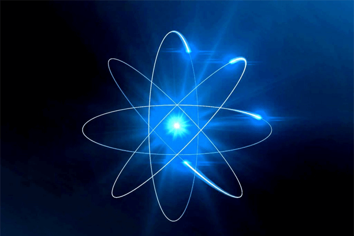

→ Modelo atômico de Dalton
Entre 1803 e 1807, Dalton propôs o primeiro modelo atômico, a primeira hipótese de como seria a estrutura de um átomo. Para ele, o átomo era a menor parte da matéria e não poderia mais ser dividido. Assim, seria uma partícula esférica, maciça, indivisível e indestrutível. O modelo atômico de Dalton ficou conhecido como “bola de bilhar”. Para saber mais, leia: Modelo atômico de Dalton.
→ Modelo atômico de Thomson
No séc. VI a.C., o filósofo Tales de Mileto já havia constatado experimentalmente a existência de elétrons. Mas só em 1897 Thomson concluiu, por meio de um experimento com tubos de raios catódicos, a existência de partículas menores que o átomo e carregadas com carga elétrica negativa. Foi nesse momento que foi descoberta a primeira partícula subatômica: o elétron. A partir dessa descoberta, foi necessária a criação de um novo modelo, e foi Joseph John Thomson que propôs o modelo atômico formado por uma esfera de cargas positivas com elétrons espalhados em sua superfície. Esse modelo ficou conhecido como “modelo do pudim de passas”. Para saber mais, leia: Modelo atômico de Thomson.→ Modelo atômico de Rutherford
Em 1911 Rutherford lançou uma nova teoria atômica, contestando a estrutura proposta por Thomson. Hans Geiger e Ernest Marsden foram precursores do modelo atômico proposto por Rutherford. 
estrutura do atomo
A última teoria atômica aceita foi o modelo atômico de Schrodinger, que propõe que o átomo é composto por um núcleo, onde se encontram os prótons (partículas positivas) e os nêutrons (partículas sem carga), rodeados por uma nuvem de elétrons (partículas negativas) chamada eletrosfera, que se mantém conectada ao núcleo por força eletromagnética. Uma exceção a essa estrutura são os hidrogênios, que não têm nêutrons, e os cátions desse elemento não possuem elétrons. Existem ainda as partículas fundamentais chamadas quarks, que compõem os prótons e nêutrons. Essas partículas fundamentais organizam-se formando outras partículas maiores. O próton é formado por dois quarks up e um quark down, além dos glúons, que é outro de tipo de partícula subatômica e mediador das forças que unem os quarks. O nêutron, por sua vez, é formado por um quark up e dois quarks down mais os glúons.